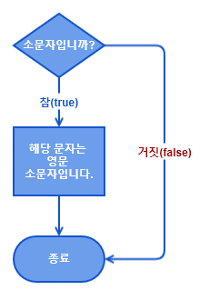
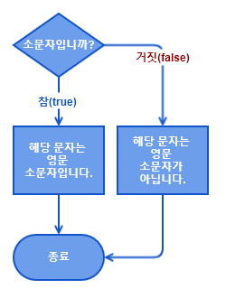
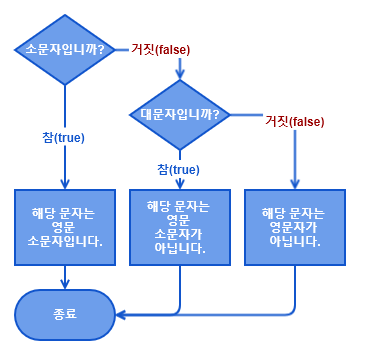

조건문 (conditional statements)
조건문은
조건식의 연산결과에 따라서 실행할 문장이 달라져서 프로그램의 실행흐름을 변경할 수 있습니다. (조건에 따라서 다른 문장이 수행되거나, 특정 조건에만 실행 또는 실행을 건너뛰게하는 등)
조건문에는
if 문과
switch 문 두 가지가 있으며 주로 if문이 많이 사용됩니다. 처리하고자 하는 경우의 수가 많을 경우 if문보다 switch문이 효율적이지만, switch문은 if문보다 제약이 많습니다. 자바에서
사용되는 대표적인 조건문의 형태는 다음과 같습니다.
- if 문
- if ~ else 문
- if ~ else if 문
- 삼항연산자
- switch 문
if 문
가장 기본적으로 사용되는 조건문은
if 문 입니다.
조건문을 뜻으로 정의하자면
"만일 ~ 한다면"이라고 생각하면 됩니다.
만일(if) 조건식이 참(true)이면 블럭({}) 안의 문장을 수행하라라는 의미가 됩니다. 조건식은 다음과 같이
조건을 정의하는 "조건식"과 문장을 실행하는 "블럭"으로 이루어져 있습니다.
Syntax
if (조건식) {
// 조건식이 참(true)일 때 수행할 문장
}Example
// if 문을 사용하여, 해당 문자가 영문 소문자인지를 확인하는 예제
public class FlowIfEx {
public static void main(String[] args) {
char ch = 'j';
if (ch > 'a' && ch < 'z') {
System.out.println("해당 문자는 영문 소문자입니다.");
}
}
}if문 순서도
* 위의 코드에서 블록에 속한 명령문은 중괄호({})를 기준으로 오른쪽으로 들여쓰기가 되어 있는 것을 볼 수 있습니다. 이처럼 들여쓰기를 통해 코드의 가독성을 높이는 것을 인덴트(indent)라고 하며, 될 수 있으면 모든 코드를 인덴트하는 것이 좋습니다. 보통 들여쓰기 코드는 탭을 사용하는데 탭은 공백 4칸으로 설정하여 사용하는 것이 좋습니다.
조건식
if문에 사용되는
조건식은 일반적으로 비교연산자와 논리연산자로 구성됩니다.
조건식을 작성할 때 실수하기 쉬운 것이, 등가비교 연산자(
==) 대신 대입연산자(
=를 사용하는 것입니다.
자바에서
조건식의 결과는 반드시
true 또는
false이어야 한다는 것입니다.
블럭 {}
괄호{}를 이용해서 여러 문장을 하나의 단위로 묶을 수 있는데, 이것을 블럭(block)이라고 합니다.
블럭은
{으로 시작하여
}로 끝납니다.
'}'다음에 문장의 끝을 의미하는 세미콜론(
;)을 붙이지 않는다는 것에 주의하세요.
if ~ else문
if 문과 함께 사용하는
else 문은
if문과는 반대로 주어진 조건식의 결과가 거짓(false)이면 주어진 명령문을 실행합니다.
Syntax
if (조건식) {
// 조건식이 참(true)일 때 수행할 문장
} else {
// 조건식이 거짓(false)일 때 수행할 문장
}Example
// if 문을 사용하여, 해당 문자가 영문 소문자인지를 확인하는 예제
public class FlowIfEx {
public static void main(String[] args) {
char ch = 'j';
if (ch > 'a' && ch < 'z') {
System.out.println("해당 문자는 영문 소문자입니다.");
} else {
System.out.println("해당 문자는 영문 소문자가 아닙니다.");
}
}
}if~else문 순서도
if ~ else if문
if ~ else if문은 마치 새로운 구문처럼 보이지만, 사실은 두 개의 if ~ else 문이 연달아 나온 것뿐입니다. 이러한
if ~ else if 문은 조건식을 여러 개 명시할 수 있으므로
중첩된 if 문을 좀 더 간결하게 표현할 수 있습니다.
if 문의 조건식에 만족하지 않을 때, else if 문의 조건을 판단하여 참이면 블럭({})의 문장을 실행하고 이 조건도 거짓이면 else 문을 실행합니다.
이때
else if 문은 여러 번 나와도 상관없지만, if 문과 else 문은 단 한 번만 나올 수 있습니다.
Syntax
if (조건식1) {
// 조건식1이 참(true)일 때 수행할 문장
} else if (조건식2) {
// 조건식1이 거짓(false)이고, 조건식2가 참(true)일 때 수행할 문장
} else {
// 조건식1이 거짓(false)이고, 조건식2도 거짓(false)일 때 수행할 문장
}Example
// if 문을 사용하여, 해당 문자가 영문 소문자인지를 확인하는 예제
public class FlowIfEx {
public static void main(String[] args) {
char ch = 'j';
if (ch > 'a' && ch < 'z') {
System.out.println("해당 문자는 영문 소문자입니다.");
} else if (ch > 'A' && ch < 'Z') {
System.out.println("해당 문자는 영문 소문자가 아닙니다.");
} else {
System.out.println("해당 문자는 영문자가 아닙니다.");
}
}
}if~else if문 순서도

* if 문의 블럭 {} :
if 문,
if ~ else 문,
if ~ else if 문에서
실행될 명령문이 한 줄뿐이라면 괄호{}를 생략하여 코딩할 수 있습니다만, 코드의 가독성을 위해서 생략하지 않는 것이 좋습니다.
중첩된 if 문
if문의 블럭 내에 또 다른 if문을 포함시키는 것이 가능한데 이것을 중첩 if문이라고 부르며 중첩의 횟수에는 제한이 거의 없습니다.
Syntax
if (조건식) {
// 조건식1이 참(true)일 때 수행할 문장
if (조건식2) {
// 조건식1과 조건식2가 모두 참(true)일 때 수행할 문장
} else {
// 조건식1이 참(true)이고, 조건식2가 거짓(false)일 때 수행할 문장
}
} else {
// 조건식1의 결과가 거짓(false)일 때 수행할 문장
}* 위와 같이 내부의 if문은 외부의 if문보다 안쪽으로 들여쓰기를 하여 두 if문의 범위가 명확히 구분될 수 있도록 작성해야 합니다. 특히 중첩 if문에서는 블럭({})을 생략에 조심해야 합니다. 외부의 if문과 안쪽의 if문이 서로 엉켜서 if문과 else블럭의 관계가 의도한 바와 다르게 동작할 수 있기 때문입니다.
삼항연산자
자바에서는 간단한 if ~ else 문은 삼항 연산자를 이용하여 간결하게 표현할 수 있습니다. 삼항 연산자는 조건식이 참(true)이면 (?)의 다음 반환값1을 실행하고 거짓(false)이면 반환값2를 실행합니다.
Syntax
조건식 ? 반환값1 : 반환값2Example
public class FlowTernaryOperator {
public static void main(String[] args) {
int num1 = 5, num2 = 7;
int result;
result = (num1 - num2 > 0) ? num1 : num2;
System.out.println("두 정수 중 더 큰 수는 " + result + "입니다.");
}
}